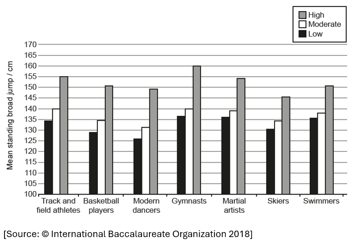
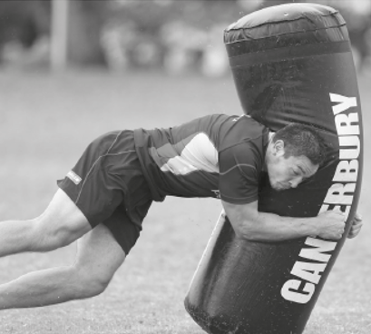
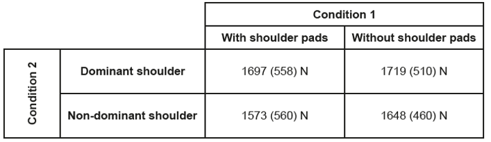
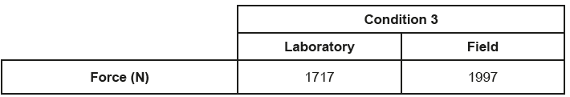
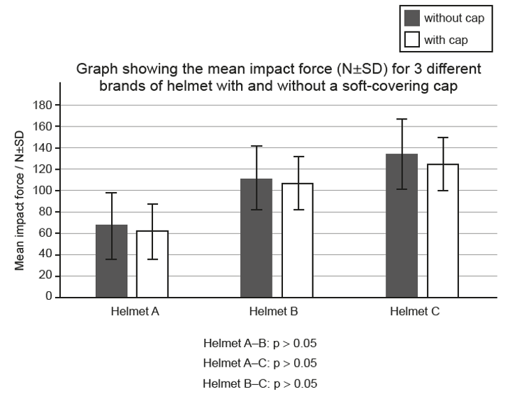
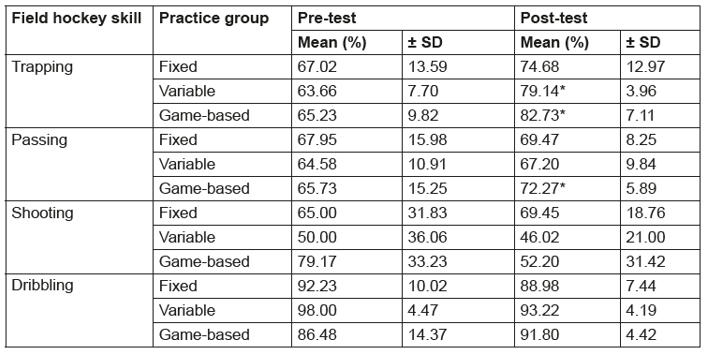
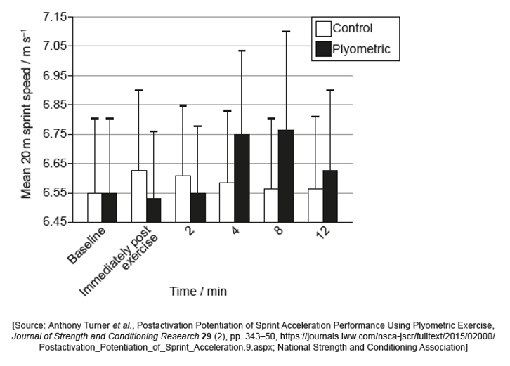

Exercise 1 – Standing Broad Jump
A study examined physical fitness levels of 10-year-old children who regularly participate in sports. The 900 participants were divided evenly between three groups according to their training level:
- Low: training less than 1 hour per week
- Moderate: training between 1 and 5 hours per week
- High: training more than 5 hours per week
Each participant performed the standing broad jump fitness test. The mean results are shown in the graph.

Source: © International Baccalaureate Organization 2018
Exercise 2 – Rugby Tackle Impact Force
A study investigated the magnitude of the impact force (N) at the shoulder during tackling in 35 experienced rugby union players. The researchers examined:
- Condition 1: Shoulder pads (with and without)
- Condition 2: Shoulder (dominant vs non-dominant)
- Condition 3: Setting (laboratory vs rugby field)

Table 1 shows the mean maximum impact force (N) and standard deviation for Conditions 1 and 2.

Table 2 shows the mean maximum impact force for trials conducted in the laboratory and on the field (Condition 3).

A recent study tested the effect on impact force (N) of adding a soft-covering cap to a helmet when dropped from a set height. The graph shows results for helmets A, B, and C.

Source: Usman et al., Journal of Science and Medicine in Sport, 2011
Exercise 3 – Field Hockey Practice Groups
A study investigated the effect of practice on improvement of four field hockey skills. Participants engaged in pre-test and post-test competitions before and after a six-week training programme. During the training programme, participants were randomly allocated to one of three practice groups:
- Fixed
- Variable
- Game-based
Results for successful performance of each skill during competitions are shown in the table (* p < 0.05).

Exercise 4 – Plyometric Exercise & Sprint Speed
A study investigated the effect of plyometric exercise on sprint speed. The mean speed of each participant was measured during a 20 m sprint as a baseline and then in a further five 20 m sprints. Between sprints, participants did one of:
- Plyometric: three sets of alternate leg bounds
- Control: continuous walking
The graph shows mean sprint speed and positive standard deviation for both conditions.


A paired t-test comparing mean sprint speed at 4 minutes with baseline: Plyometric: p < 0.05; Control: p > 0.05.